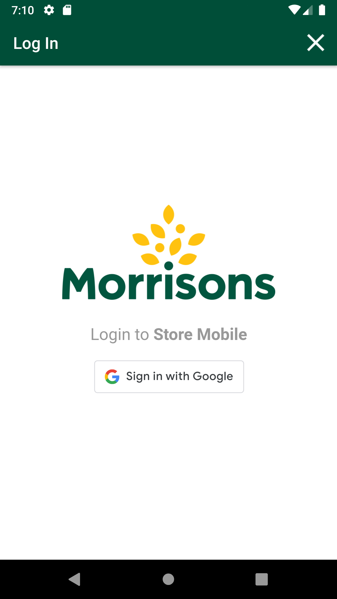
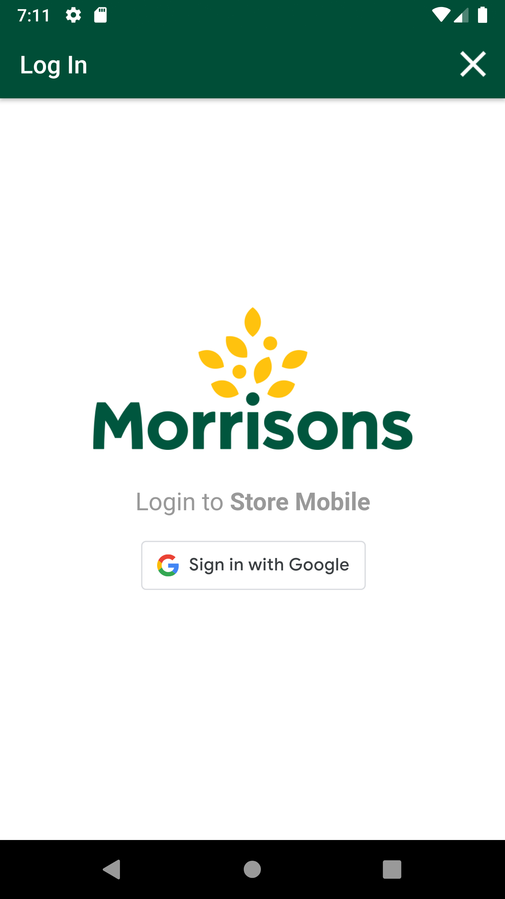

-
GLH Negative prompt scenarios
10:11:49 AM / 00:40:51:022 Fail
GLH Negative prompt scenarios
12.28.2023 10:11:49 AM 12.28.2023 10:52:40 AM 00:40:51:022 · #test-id=1@Newglh_negative_promptPassCreate SOH for itemsPassCreate SOH for itemsGiven I create SOH for the Negative Prompt "65"PassDelete GLH Storewalk from ServicePassDelete GLH Storewalk from ServiceGiven request is made to capture access token and post endpoint for user v2 for "" Then I Verify the Response Code for the following "- " is 200
And I get the field value for the field "access_token"And Get the generated Access Tocken for SMA app Login ServiceGiven Get request is made to Get storewalks service for current dateAnd Get Operation perform on service requestThen Verify Get storewalks service response for current dateThen Delete request is made to Delete GLH storewalk for store id "8"PassTO CHANGE THE DEVICE TIMINGS AS REQUIREDPassTO CHANGE THE DEVICE TIMINGS AS REQUIREDGiven I send the time "07" and mins "00" and meridiem "am" and current date in listThen I Change timeThen I Change dateFailSMA-22779_To verify API response is 201 Created in Create Walkitem API when multiple product id is passed in request body asynchronously.FailSMA-22779_To verify API response is 201 Created in Create Walkitem API when multiple product id is passed in request body asynchronously.And Get the generated Access Tocken for SMA app Login ServiceGiven Post request is made to Create storewalk for negative prompt for store id "8" and type "GapsHighsLows"And Post Operation perform on service requestThen Verify Create storewalk service responseGiven Post request is made to Create walkitem service for store id "8" and multiple product ids "100001478","102391639"com.morrisons.common.action.Hook.afterScenario(io.cucumber.java.Scenario)And Post Operation perform on service requestStep skippedThen Verify Create walkitem service response is 201Step skippedFailSMA-22779_To verify multiple walkitems are created successfully in walkitem table through Create Walkitem API when 10 product is are passed at the given time for one walk_id.FailSMA-22779_To verify multiple walkitems are created successfully in walkitem table through Create Walkitem API when 10 product is are passed at the given time for one walk_id.And Get the generated Access Tocken for SMA app Login ServiceGiven Post request is made to Create storewalk for negative prompt for store id "8" and type "GapsHighsLows"And Post Operation perform on service requestThen Verify Create storewalk service responseGiven Post request is made to Multiple product Create walkitem service for store id "8" and 10 product ids "100001478","102391639","110213664","111032347","109471640","110781645","111358734","111037383","111094732","109669533"com.morrisons.common.action.Hook.afterScenario(io.cucumber.java.Scenario)And Post Operation perform on service requestStep skippedThen Verify Create walkitem service response is 201Step skippedFailSMA-22779_To verify Create walkitem API through exceeded limit exception when we pass more than 10 product ids in the request body.FailSMA-22779_To verify Create walkitem API through exceeded limit exception when we pass more than 10 product ids in the request body.And Get the generated Access Tocken for SMA app Login ServiceGiven Post request is made to Create storewalk for negative prompt for store id "8" and type "GapsHighsLows"And Post Operation perform on service requestThen Verify Create storewalk service responseGiven Post request is made to Multiple product Create walkitem service for store id "8" and more than product ids "100001478","102391639","110213664","111032347","109471640","11081645","111358734","111037383","111094732","109669533","106174631"com.morrisons.common.action.Hook.afterScenario(io.cucumber.java.Scenario)And Post Operation perform on service requestStep skippedThen Verify Error message in Create walkitem service responseStep skippedFailSMA-22779_To verify using create capture API, captures are getting created for all the walkitems created through Multiple Product endpoint of Create walkitem API.FailSMA-22779_To verify using create capture API, captures are getting created for all the walkitems created through Multiple Product endpoint of Create walkitem API.And Get the generated Access Tocken for SMA app Login ServiceGiven Post request is made to Create storewalk for negative prompt for store id "8" and type "GapsHighsLows"And Post Operation perform on service requestThen Verify Create storewalk service responseGiven Post request is made to Multiple product Create walkitem service for store id "8" and 10 product ids "100001478","102391639","110213664","111032347","109471640","111358734","111037383","111094732","109669533","" com.morrisons.common.action.Hook.afterScenario(io.cucumber.java.Scenario) And Post Operation perform on service requestStep skippedThen Verify Create walkitem service response is 201Step skippedGiven Post request is made to Create capture service for store id "8", product id "100001478", location "On_Shelf", value "100", sectionId "0" and capture type "Count"Step skippedAnd Post Operation perform on service requestStep skippedThen Verify Create capture service responseStep skippedFailSMA-22779_To verify section is created when multiple walkitems are created using Create Walkitem API by passing multiple product id in request body.FailSMA-22779_To verify section is created when multiple walkitems are created using Create Walkitem API by passing multiple product id in request body.And Get the generated Access Tocken for SMA app Login ServiceGiven Post request is made to Create storewalk for negative prompt for store id "8" and type "GapsHighsLows"And Post Operation perform on service requestThen Verify Create storewalk service responseGiven Post request is made to Create walkitem service for store id "8" and multiple product ids "100001478","102391639"com.morrisons.common.action.Hook.afterScenario(io.cucumber.java.Scenario)
And Post Operation perform on service requestStep skippedThen Verify Create walkitem service response is 201Step skippedGiven Post request is made to Create capture service for store id "8", product id "100001478", location "On_Shelf", value "100", sectionId "0" and capture type "Count"Step skippedAnd Post Operation perform on service requestStep skippedThen Verify Create capture service responseStep skippedFailSMA-22779_To verify section is created when multiple walkitems are created using Create Walkitem API by passing multiple product id in request body.FailSMA-22779_To verify section is created when multiple walkitems are created using Create Walkitem API by passing multiple product id in request body.And Get the generated Access Tocken for SMA app Login ServiceGiven Post request is made to Create storewalk for negative prompt for store id "8" and type "GapsHighsLows"And Post Operation perform on service requestThen Verify Create storewalk service responseGiven Post request is made to Create walkitem service for store id "8" and multiple product ids "100001478","102391639"com.morrisons.common.action.Hook.afterScenario(io.cucumber.java.Scenario) And Post Operation perform on service requestStep skippedThen Verify Create walkitem service response is 201Step skippedAnd Get request is made to Get storewalk service for store id "8"Step skippedThen Get Operation perform on service requestStep skippedThen Verify Get storewalk service responseStep skippedAnd Get request is made to Get section service for store id "8"Step skippedThen Get Operation perform on service requestStep skippedAnd Verify Get section service responseStep skippedFailSMA-22779_To verify whether it allows to create walkitem for different store locations if same products are already processed for other store locationFailSMA-22779_To verify whether it allows to create walkitem for different store locations if same products are already processed for other store locationAnd Get the generated Access Tocken for SMA app Login ServiceGiven Post request is made to Create storewalk for negative prompt for store id "8" and type "GapsHighsLows"And Post Operation perform on service requestThen Verify Create storewalk service responseGiven Post request is made to Multiple product Create walkitem service for store id "8" and 10 product ids "100001478","102391639","110213664","111032347","109471640","110781645","111358734","111037383","111094732","109669533"com.morrisons.common.action.Hook.afterScenario(io.cucumber.java.Scenario)
And Post Operation perform on service requestStep skippedThen Verify Create walkitem service response is 201Step skippedAnd Get request is made to Get storewalk service for store id "8"Step skippedThen Get Operation perform on service requestStep skippedThen Verify Get storewalk service responseStep skippedAnd Get request is made to Get section service for store id "8"Step skippedThen Get Operation perform on service requestStep skippedAnd Verify Get section service responseStep skippedFailSMA-22779_To verify whether it allows to create walkitem for different store locations if same products are already processed for other store locationFailSMA-22779_To verify whether it allows to create walkitem for different store locations if same products are already processed for other store locationAnd Get the generated Access Tocken for SMA app Login ServiceGiven Post request is made to Create storewalk for negative prompt for store id "8" and type "GapsHighsLows"And Post Operation perform on service requestThen Verify Create storewalk service responseGiven Post request is made to Multiple product Create walkitem service for store id "8" and 10 product ids "100001478","102391639","110213664","111032347","109471640","110781645","111358734","111037383","111094732","109669533"com.morrisons.common.action.Hook.afterScenario(io.cucumber.java.Scenario) And Post Operation perform on service requestStep skippedThen Verify Create walkitem service response is 201Step skippedAnd Get the generated Access Tocken for SMA app Login ServiceStep skippedGiven Post request is made to Create storewalk for negative prompt for store id "77" and type "GapsHighsLows"Step skippedAnd Post Operation perform on service requestStep skippedThen Verify Create storewalk service responseStep skippedGiven Post request is made to Multiple product Create walkitem service for store id "77" and 10 product ids "100001478","102391639","110213664","111032347","109471640","110781645","111358734","111037383","111094732","109669533"Step skippedAnd Post Operation perform on service requestStep skippedThen Verify Create walkitem service response is 201Step skippedFailSMA-22779_To verify create walkitem response code:400,401 with incorrect headerFailSMA-22779_To verify create walkitem response code:400,401 with incorrect headerAnd Get the generated Access Tocken for SMA app Login ServiceGiven Post request is made to Create storewalk for negative prompt for store id "8" and type "GapsHighsLows"And Post Operation perform on service requestThen Verify Create storewalk service responseGiven Post request is made to Create walkitem service for store id "8" and product id "100001478"com.morrisons.common.action.Hook.afterScenario(io.cucumber.java.Scenario)
And Post Operation perform on service requestStep skippedThen Verify Create walkitem service response is 201Step skippedAnd Get the generated Access Tocken for SMA app Login ServiceStep skippedGiven Post request is made to Create storewalk for negative prompt for store id "77" and type "GapsHighsLows"Step skippedAnd Post Operation perform on service requestStep skippedThen Verify Create storewalk service responseStep skippedGiven Post request is made to Multiple product Create walkitem service for store id "77" and 10 product ids "100001478","102391639","110213664","111032347","109471640","110781645","111358734","111037383","111094732","109669533"Step skippedAnd Post Operation perform on service requestStep skippedThen Verify Create walkitem service response is 201Step skippedFailSMA-22779_To verify create walkitem response code:400,401 with incorrect headerFailSMA-22779_To verify create walkitem response code:400,401 with incorrect headerAnd Get the generated Access Tocken for SMA app Login ServiceGiven Post request is made to Create storewalk for negative prompt for store id "8" and type "GapsHighsLows"And Post Operation perform on service requestThen Verify Create storewalk service responseGiven Post request is made to Create walkitem service for store id "8" and product id "100001478"com.morrisons.common.action.Hook.afterScenario(io.cucumber.java.Scenario) And Post Operation perform on service request with Incorrect headerStep skippedAnd Verify service response code is 400,401Step skippedFailSMA-22779_To verify create walkitem response code:400,401 with incorrect access tokenFailSMA-22779_To verify create walkitem response code:400,401 with incorrect access tokenAnd Get the generated Access Tocken for SMA app Login ServiceGiven Post request is made to Create storewalk for negative prompt for store id "8" and type "GapsHighsLows"And Post Operation perform on service requestThen Verify Create storewalk service responseAnd Get Incorrect access tokenGiven Post request is made to Create walkitem service for store id "8" and product id "100001478"com.morrisons.common.action.Hook.afterScenario(io.cucumber.java.Scenario)
And Post Operation perform on service request with Incorrect headerStep skippedAnd Verify service response code is 400,401Step skippedFailSMA-22779_To verify create walkitem response code:400,401 with incorrect access tokenFailSMA-22779_To verify create walkitem response code:400,401 with incorrect access tokenAnd Get the generated Access Tocken for SMA app Login ServiceGiven Post request is made to Create storewalk for negative prompt for store id "8" and type "GapsHighsLows"And Post Operation perform on service requestThen Verify Create storewalk service responseAnd Get Incorrect access tokenGiven Post request is made to Create walkitem service for store id "8" and product id "100001478"com.morrisons.common.action.Hook.afterScenario(io.cucumber.java.Scenario) And Post Operation perform on service requestStep skippedAnd Verify service response code is 400,401Step skippedFailSMA-22779_To verify create walkitem response code:401 with blank store idFailSMA-22779_To verify create walkitem response code:401 with blank store idAnd Get the generated Access Tocken for SMA app Login ServiceGiven Post request is made to Create storewalk for negative prompt for store id "8" and type "GapsHighsLows"And Post Operation perform on service requestThen Verify Create storewalk service responseAnd Get Incorrect access tokenGiven Post request is made to Create walkitem service for store id "77" and product id "100001478"com.morrisons.common.action.Hook.afterScenario(io.cucumber.java.Scenario)And Post Operation perform on service requestStep skippedAnd Verify service response code is 401Step skippedFailSMA-22779_To verify create walkitem response code:400 with blank request payloadFailSMA-22779_To verify create walkitem response code:400 with blank request payloadAnd Get the generated Access Tocken for SMA app Login ServiceGiven Post request is made to Create storewalk for negative prompt for store id "8" and type "GapsHighsLows"And Post Operation perform on service requestThen Verify Create storewalk service responseGiven Post request is made to Create walkitem service without payload for store id "8"com.morrisons.common.action.Hook.afterScenario(io.cucumber.java.Scenario)
And Post Operation perform on service requestStep skippedAnd Verify service response code is 400,401Step skippedFailSMA-22779_To verify create walkitem response code:401 with blank store idFailSMA-22779_To verify create walkitem response code:401 with blank store idAnd Get the generated Access Tocken for SMA app Login ServiceGiven Post request is made to Create storewalk for negative prompt for store id "8" and type "GapsHighsLows"And Post Operation perform on service requestThen Verify Create storewalk service responseAnd Get Incorrect access tokenGiven Post request is made to Create walkitem service for store id "77" and product id "100001478"com.morrisons.common.action.Hook.afterScenario(io.cucumber.java.Scenario)And Post Operation perform on service requestStep skippedAnd Verify service response code is 401Step skippedFailSMA-22779_To verify create walkitem response code:400 with blank request payloadFailSMA-22779_To verify create walkitem response code:400 with blank request payloadAnd Get the generated Access Tocken for SMA app Login ServiceGiven Post request is made to Create storewalk for negative prompt for store id "8" and type "GapsHighsLows"And Post Operation perform on service requestThen Verify Create storewalk service responseGiven Post request is made to Create walkitem service without payload for store id "8"com.morrisons.common.action.Hook.afterScenario(io.cucumber.java.Scenario)
And Post Operation perform on service requestStep skippedAnd Verify service response code is 400Step skippedFailSMA-22779_To verify create walkitem response code:400,401 with incorect request payloadFailSMA-22779_To verify create walkitem response code:400,401 with incorect request payloadAnd Get the generated Access Tocken for SMA app Login ServiceGiven Post request is made to Create storewalk for negative prompt for store id "8" and type "GapsHighsLows"And Post Operation perform on service requestThen Verify Create storewalk service responseGiven Post request is made to Create walkitem service with invalid payload for store id "8" and product id "100001478"com.morrisons.common.action.Hook.afterScenario(io.cucumber.java.Scenario)
And Post Operation perform on service requestStep skippedAnd Verify service response code is 400Step skippedFailSMA-22771_To verify the list of "Prompted Negative Products" are visible on offshelf location in AM GLH across store mobile app without any captures.FailSMA-22771_To verify the list of "Prompted Negative Products" are visible on offshelf location in AM GLH across store mobile app without any captures.When I enter Username and Password for SMA Manager userAnd I click on login button for SMAThen I click on 'stockMngmtText' on page 'HomePagePO_New'com.morrisons.common.action.Hook.afterScenario(io.cucumber.java.Scenario)Then I click on "Shop Floor - Gap Scan"Step skippedThen I click on Fixture ScanStep skippedAnd I verify products list is not displayed in fixture locationStep skippedThen I click on Back buttonStep skippedThen I click on OffShelfStep skippedAnd I verify Prompted Negative products are displayed in Offshelf locationStep skippedFailSMA-22771_To verify For GLH create Items with reason as ‘NegativeStock’ to appear the records in offshelf in GLH.FailSMA-22771_To verify For GLH create Items with reason as ‘NegativeStock’ to appear the records in offshelf in GLH.When I enter Username and Password for SMA Manager userAnd I click on login button for SMAThen I click on 'stockMngmtText' on page 'HomePagePO_New'Then I click on "Shop Floor - Gap Scan"Then I click on OffShelfAnd I verify Prompted Negative products are displayed in Offshelf locationcom.morrisons.common.action.Hook.afterScenario(io.cucumber.java.Scenario)And Get the generated Access Tocken for SMA app Login ServiceStep skippedGiven Get request is made to Get storewalks service for current dateStep skippedAnd Get Operation perform on service requestStep skippedThen Verify Get storewalks service response for current date for store id "8"Step skippedGiven Get request is made to Get storewalk service for Negative prompt product and store id "8"Step skippedAnd Get Operation perform on service requestStep skippedThen Verify Get storewalks service response for Negative prompt and store id "8"Step skippedAnd I verify GLH create Items with reason as ‘NegativeStock’ in GetStorewalks service responseStep skippedFailSMA-22771_To verify if "Prompted Negative Products" are not captured by store colleague, then status across warehouse location for respective department > section is Offshelf pending.FailSMA-22771_To verify if "Prompted Negative Products" are not captured by store colleague, then status across warehouse location for respective department > section is Offshelf pending.When I enter Username and Password for SMA Manager userAnd I click on login button for SMAThen I click on 'stockMngmtText' on page 'HomePagePO_New'Then I click on "Shop Floor - Gap Scan"Then I click on OffShelfAnd I verify Prompted Negative products are displayed in Offshelf locationcom.morrisons.common.action.Hook.afterScenario(io.cucumber.java.Scenario)Then I click on Back buttonStep skippedThen I click on WareHouseStep skippedAnd I verify department section status is Offshelf pendingStep skippedAnd I click on Back ButtonStep skippedFailSMA-22771_To verify once negative walkitems are created and displayed at offshelf location then the respective departments are also visible followed by section across Warehouse location.FailSMA-22771_To verify once negative walkitems are created and displayed at offshelf location then the respective departments are also visible followed by section across Warehouse location.When I enter Username and Password for SMA Manager userAnd I click on login button for SMAThen I click on 'stockMngmtText' on page 'HomePagePO_New'Then I click on "Shop Floor - Gap Scan"Then I click on OffShelfAnd I verify Prompted Negative products are displayed in Offshelf locationcom.morrisons.common.action.Hook.afterScenario(io.cucumber.java.Scenario)Then I get Category name from Offshelf locationStep skippedThen I click on Back buttonStep skippedThen I click on PetrolStep skippedAnd I verify products are displayed in Petrol locationStep skippedThen I get Category name from Petrol locationStep skippedThen I click on Back buttonStep skippedThen I click on WareHouseStep skippedAnd I verify products are displayed in Warehouse locationStep skippedFailSMA-22771_To verify Groups and section displayed at Warehouse location on UI matches with Get storewalk Service response.FailSMA-22771_To verify Groups and section displayed at Warehouse location on UI matches with Get storewalk Service response.When I enter Username and Password for SMA Manager userAnd I click on login button for SMAThen I click on 'stockMngmtText' on page 'HomePagePO_New'Then I click on "Shop Floor - Gap Scan"Then I click on OffShelfAnd I verify Prompted Negative products are displayed in Offshelf locationcom.morrisons.common.action.Hook.afterScenario(io.cucumber.java.Scenario)Then I click on Back buttonStep skippedThen I click on WareHouseStep skippedAnd I verify products are displayed in Warehouse locationStep skippedThen I get Department name from Warehouse locationStep skippedAnd Get the generated Access Tocken for SMA app Login ServiceStep skippedGiven Get request is made to Get storewalks service for current dateStep skippedAnd Get Operation perform on service requestStep skippedThen Verify Get storewalks service response for current date for store id "8"Step skippedGiven Get request is made to Get storewalk service for store id "8"Step skippedAnd Get Operation perform on service requestStep skippedThen Verify Get storewalks service response for store id "8"Step skippedAnd I verify Warehouse Group dept and section on UI and service matchesStep skippedFailSMA-22771_To verify user is able to capture "Prompted Negative Products" as GAP in on-shelf location then respective product is getting removed from Off shelf location.FailSMA-22771_To verify user is able to capture "Prompted Negative Products" as GAP in on-shelf location then respective product is getting removed from Off shelf location.When I enter Username and Password for SMA Manager userAnd I click on login button for SMAThen I click on 'stockMngmtText' on page 'HomePagePO_New'Then I click on "Shop Floor - Gap Scan"Then I click on OffShelfAnd I verify Prompted Negative products are displayed in Offshelf locationcom.morrisons.common.action.Hook.afterScenario(io.cucumber.java.Scenario)Then I get Category name and Min values from Offshelf locationStep skippedThen I click on Back buttonStep skippedThen I click on Fixture ScanStep skippedAnd I click on barcode entry ButtonStep skippedThen I Enter barcode number in fixture scanStep skippedAnd I click on GAP buttonStep skippedAnd I choose the plan from popup if multiple records presentStep skippedAnd I will capture the product name from view listStep skippedThen I verify the if it is GAPStep skippedThen I click on Back buttonStep skippedThen I click on OffShelfStep skippedAnd I verify Scan product in fixture is removed from offshelf locationStep skippedFailSMA-22771_To verify user is able to capture "Prompted Negative Products" as LOW in on-shelf location then respective product is getting removed from Off shelf location.FailSMA-22771_To verify user is able to capture "Prompted Negative Products" as LOW in on-shelf location then respective product is getting removed from Off shelf location.When I enter Username and Password for SMA Manager userAnd I click on login button for SMAThen I click on 'stockMngmtText' on page 'HomePagePO_New'Then I click on "Shop Floor - Gap Scan"Then I click on OffShelfAnd I verify Prompted Negative products are displayed in Offshelf locationcom.morrisons.common.action.Hook.afterScenario(io.cucumber.java.Scenario)Then I get Category name and Min values from Offshelf locationStep skippedThen I click on Back buttonStep skippedThen I click on Fixture ScanStep skippedAnd I click on barcode entry ButtonStep skippedThen I Enter barcode number in fixture scanStep skippedAnd I click on COUNT buttonStep skippedAnd I enter quantity "" for fixture and warehouse Step skippedAnd I choose the plan from popup if multiple records presentStep skippedAnd I will capture the product name from view listStep skippedThen I verify the if it is COUNTStep skippedThen I click on Back buttonStep skippedThen I click on OffShelfStep skippedAnd I verify Scan product in fixture is removed from offshelf locationStep skippedFailSMA-22771_To verify user is able to capture "Prompted Negative Products" as HIGH in on-shelf location then respective product is getting removed from Off shelf location.FailSMA-22771_To verify user is able to capture "Prompted Negative Products" as HIGH in on-shelf location then respective product is getting removed from Off shelf location.When I enter Username and Password for SMA Manager userAnd I click on login button for SMAThen I click on 'stockMngmtText' on page 'HomePagePO_New'Then I click on "Shop Floor - Gap Scan"Then I click on OffShelfAnd I verify Prompted Negative products are displayed in Offshelf locationcom.morrisons.common.action.Hook.afterScenario(io.cucumber.java.Scenario)Then I get Category name and Min values from Offshelf locationStep skippedThen I click on Back buttonStep skippedThen I click on Fixture ScanStep skippedAnd I click on barcode entry ButtonStep skippedThen I Enter barcode number in fixture scanStep skippedAnd I click on COUNT buttonStep skippedAnd I enter quantity "" for fixture and warehouse Step skippedAnd I choose the plan from popup if multiple records presentStep skippedAnd I will capture the product name from view listStep skippedThen I verify the if it is COUNTStep skippedThen I click on Back buttonStep skippedThen I click on OffShelfStep skippedAnd I verify Scan product in fixture is removed from offshelf locationStep skippedFailSMA-22771_To verify when user scans "Prompted Negative Products" in fixture location as HIGH then respective products are excluded from the Warehouse location but empty item list should be displayed.FailSMA-22771_To verify when user scans "Prompted Negative Products" in fixture location as HIGH then respective products are excluded from the Warehouse location but empty item list should be displayed.When I enter Username and Password for SMA Manager userAnd I click on login button for SMAThen I click on 'stockMngmtText' on page 'HomePagePO_New'Then I click on "Shop Floor - Gap Scan"And Get the generated Access Tocken for SMA app Login ServiceThen I click on OffShelfAnd I verify Prompted Negative products are displayed in Offshelf locationcom.morrisons.common.action.Hook.afterScenario(io.cucumber.java.Scenario)Then I get Category name and Min values from Offshelf locationStep skippedThen I click on Back buttonStep skippedThen I click on Fixture ScanStep skippedAnd I click on barcode entry ButtonStep skippedThen I Enter barcode number in fixture scanStep skippedAnd I click on COUNT buttonStep skippedAnd I enter quantity "" for fixture and warehouse Step skippedAnd I choose the plan from popup if multiple records presentStep skippedAnd I will capture the product name from view listStep skippedThen I verify the if it is COUNTStep skippedThen I click on Back buttonStep skippedThen I click on OffShelfStep skippedAnd I verify Scan product in fixture is removed from offshelf locationStep skippedGiven Get request is made to Get storewalks service for current dateStep skippedAnd Get Operation perform on service requestStep skippedThen Verify Get storewalks service response for current date for store id "8"Step skippedGiven Get request is made to Get storewalk service for store id "8"Step skippedAnd Get Operation perform on service requestStep skippedThen Verify Get storewalks service response for store id "8"Step skippedAnd I Get Group name and product id from GetStorewalk ServiceStep skippedThen I click on Back buttonStep skippedThen I click on WareHouseStep skippedThen I Select the Group section in warehouseStep skippedThen I Verify Empty product list is displayedStep skippedFailSMA-22771_To verify user is able to set '0' quantity for prompted negative counts at Off-Shelf location.FailSMA-22771_To verify user is able to set '0' quantity for prompted negative counts at Off-Shelf location.When I enter Username and Password for SMA Manager userAnd I click on login button for SMAThen I click on 'stockMngmtText' on page 'HomePagePO_New'com.morrisons.common.action.Hook.afterScenario(io.cucumber.java.Scenario)Then I click on "Shop Floor - Gap Scan"Step skippedThen I click on OffShelfStep skippedAnd I select section in offshelf locationStep skippedAnd I enter quantity as "0" in offshelf locationStep skippedThen I verify "0" quantity set for prompted negative counts at offshelf locationStep skippedFailSMA-22771_To verify user should not be able to delete negative "Prompted Negative Products" from Offshelf Location.FailSMA-22771_To verify user should not be able to delete negative "Prompted Negative Products" from Offshelf Location.When I enter Username and Password for SMA Manager userAnd I click on login button for SMAThen I click on 'stockMngmtText' on page 'HomePagePO_New'Then I click on "Shop Floor - Gap Scan"Then I click on OffShelfAnd I verify Prompted Negative products are displayed in Offshelf locationcom.morrisons.common.action.Hook.afterScenario(io.cucumber.java.Scenario)Then I select section in offshelf locationStep skippedAnd I left swipe the product descriptionStep skippedAnd I verify product is not able to delete from Offshelf LocationStep skippedFailSMA-22771_To verify user is able to complete warehouse location for the "Prompted Negative Products".FailSMA-22771_To verify user is able to complete warehouse location for the "Prompted Negative Products".When I enter Username and Password for SMA Manager userAnd I click on login button for SMAThen I click on 'stockMngmtText' on page 'HomePagePO_New'Then I click on "Shop Floor - Gap Scan"Then I click on OffShelfAnd I verify Prompted Negative products are displayed in Offshelf locationcom.morrisons.common.action.Hook.afterScenario(io.cucumber.java.Scenario)And I Complete the sectionStep skippedThen I verify status as CompletedStep skippedAnd I click on Back ButtonStep skippedThen I click on PetrolStep skippedAnd I verify Prompted Negative products are displayed in Offshelf locationStep skippedAnd I Complete the sectionStep skippedAnd I verify status as CompletedStep skippedAnd I click on Back ButtonStep skippedThen I click on WareHouseStep skippedAnd I Complete the warehouse sectionStep skippedAnd I verify status as CompletedStep skippedAnd I click on Back ButtonStep skipped
-
org.openqa.selenium.NoSuchElementException
2 tests
org.openqa.selenium.NoSuchElementException
2 failedStatus Timestamp TestName Fail 10:27:47 AM Then I click on 'stockMngmtText' on page 'HomePagePO_New' GLH Negative prompt scenarios.SMA-22771_To verify the list of "Prompted Negative Products" are visible on offshelf location in AM GLH across store mobile app without any captures..Then I click on 'stockMngmtText' on page 'HomePagePO_New'Fail 10:47:09 AM Then I click on 'stockMngmtText' on page 'HomePagePO_New' GLH Negative prompt scenarios.SMA-22771_To verify user is able to set '0' quantity for prompted negative counts at Off-Shelf location..Then I click on 'stockMngmtText' on page 'HomePagePO_New' -
org.openqa.selenium.WebDriverException
10 tests
org.openqa.selenium.WebDriverException
10 failedStatus Timestamp TestName Fail 10:30:22 AM And I verify Prompted Negative products are displayed in Offshelf location GLH Negative prompt scenarios.SMA-22771_To verify For GLH create Items with reason as ‘NegativeStock’ to appear the records in offshelf in GLH..And I verify Prompted Negative products are displayed in Offshelf locationFail 10:32:42 AM And I verify Prompted Negative products are displayed in Offshelf location GLH Negative prompt scenarios.SMA-22771_To verify if "Prompted Negative Products" are not captured by store colleague, then status across warehouse location for respective department > section is Offshelf pending..And I verify Prompted Negative products are displayed in Offshelf locationFail 10:34:53 AM And I verify Prompted Negative products are displayed in Offshelf location GLH Negative prompt scenarios.SMA-22771_To verify once negative walkitems are created and displayed at offshelf location then the respective departments are also visible followed by section across Warehouse location..And I verify Prompted Negative products are displayed in Offshelf locationFail 10:37:08 AM And I verify Prompted Negative products are displayed in Offshelf location GLH Negative prompt scenarios.SMA-22771_To verify Groups and section displayed at Warehouse location on UI matches with Get storewalk Service response..And I verify Prompted Negative products are displayed in Offshelf locationFail 10:39:20 AM And I verify Prompted Negative products are displayed in Offshelf location GLH Negative prompt scenarios.SMA-22771_To verify user is able to capture "Prompted Negative Products" as GAP in on-shelf location then respective product is getting removed from Off shelf location..And I verify Prompted Negative products are displayed in Offshelf locationFail 10:41:31 AM And I verify Prompted Negative products are displayed in Offshelf location GLH Negative prompt scenarios.SMA-22771_To verify user is able to capture "Prompted Negative Products" as LOW in on-shelf location then respective product is getting removed from Off shelf location..And I verify Prompted Negative products are displayed in Offshelf locationFail 10:43:44 AM And I verify Prompted Negative products are displayed in Offshelf location GLH Negative prompt scenarios.SMA-22771_To verify user is able to capture "Prompted Negative Products" as HIGH in on-shelf location then respective product is getting removed from Off shelf location..And I verify Prompted Negative products are displayed in Offshelf locationFail 10:45:55 AM And I verify Prompted Negative products are displayed in Offshelf location GLH Negative prompt scenarios.SMA-22771_To verify when user scans "Prompted Negative Products" in fixture location as HIGH then respective products are excluded from the Warehouse location but empty item list should be displayed..And I verify Prompted Negative products are displayed in Offshelf locationFail 10:49:47 AM And I verify Prompted Negative products are displayed in Offshelf location GLH Negative prompt scenarios.SMA-22771_To verify user should not be able to delete negative "Prompted Negative Products" from Offshelf Location..And I verify Prompted Negative products are displayed in Offshelf locationFail 10:51:57 AM And I verify Prompted Negative products are displayed in Offshelf location GLH Negative prompt scenarios.SMA-22771_To verify user is able to complete warehouse location for the "Prompted Negative Products"..And I verify Prompted Negative products are displayed in Offshelf location -
java.lang.NullPointerException
11 tests
java.lang.NullPointerException
11 failedStatus Timestamp TestName Fail 10:17:23 AM Given Post request is made to Create walkitem service for store id "8" and multiple product ids "100001478","102391639" GLH Negative prompt scenarios.SMA-22779_To verify API response is 201 Created in Create Walkitem API when multiple product id is passed in request body asynchronously..Given Post request is made to Create walkitem service for store id "8" and multiple product ids "100001478","102391639"Fail 10:18:36 AM Given Post request is made to Multiple product Create walkitem service for store id "8" and 10 product ids "100001478","102391639","110213664","111032347","109471640","110781645","111358734","111037383","111094732","109669533" GLH Negative prompt scenarios.SMA-22779_To verify multiple walkitems are created successfully in walkitem table through Create Walkitem API when 10 product is are passed at the given time for one walk_id..Given Post request is made to Multiple product Create walkitem service for store id "8" and 10 product ids "100001478","102391639","110213664","111032347","109471640","110781645","111358734","111037383","111094732","109669533"Fail 10:19:48 AM Given Post request is made to Multiple product Create walkitem service for store id "8" and more than product ids "100001478","102391639","110213664","111032347","109471640","11081645","111358734","111037383","111094732","109669533","106174631" GLH Negative prompt scenarios.SMA-22779_To verify Create walkitem API through exceeded limit exception when we pass more than 10 product ids in the request body..Given Post request is made to Multiple product Create walkitem service for store id "8" and more than product ids "100001478","102391639","110213664","111032347","109471640","11081645","111358734","111037383","111094732","109669533","106174631"Fail 10:21:00 AM Given Post request is made to Multiple product Create walkitem service for store id "8" and 10 product ids "100001478","102391639","110213664","111032347","109471640","111358734","111037383","111094732","109669533"," " GLH Negative prompt scenarios.SMA-22779_To verify using create capture API, captures are getting created for all the walkitems created through Multiple Product endpoint of Create walkitem API..Given Post request is made to Multiple product Create walkitem service for store id "8" and 10 product ids "100001478","102391639","110213664","111032347","109471640","111358734","111037383","111094732","109669533","" Fail 10:22:03 AM Given Post request is made to Create walkitem service for store id "8" and multiple product ids "100001478","102391639" GLH Negative prompt scenarios.SMA-22779_To verify section is created when multiple walkitems are created using Create Walkitem API by passing multiple product id in request body..Given Post request is made to Create walkitem service for store id "8" and multiple product ids "100001478","102391639"Fail 10:23:00 AM Given Post request is made to Multiple product Create walkitem service for store id "8" and 10 product ids "100001478","102391639","110213664","111032347","109471640","110781645","111358734","111037383","111094732","109669533" GLH Negative prompt scenarios.SMA-22779_To verify whether it allows to create walkitem for different store locations if same products are already processed for other store location.Given Post request is made to Multiple product Create walkitem service for store id "8" and 10 product ids "100001478","102391639","110213664","111032347","109471640","110781645","111358734","111037383","111094732","109669533"Fail 10:23:28 AM Given Post request is made to Create walkitem service for store id "8" and product id "100001478" GLH Negative prompt scenarios.SMA-22779_To verify create walkitem response code:400,401 with incorrect header.Given Post request is made to Create walkitem service for store id "8" and product id "100001478"Fail 10:24:30 AM Given Post request is made to Create walkitem service for store id "8" and product id "100001478" GLH Negative prompt scenarios.SMA-22779_To verify create walkitem response code:400,401 with incorrect access token.Given Post request is made to Create walkitem service for store id "8" and product id "100001478"Fail 10:25:27 AM Given Post request is made to Create walkitem service for store id "77" and product id "100001478" GLH Negative prompt scenarios.SMA-22779_To verify create walkitem response code:401 with blank store id.Given Post request is made to Create walkitem service for store id "77" and product id "100001478"Fail 10:25:56 AM Given Post request is made to Create walkitem service without payload for store id "8" GLH Negative prompt scenarios.SMA-22779_To verify create walkitem response code:400 with blank request payload.Given Post request is made to Create walkitem service without payload for store id "8"Fail 10:26:57 AM Given Post request is made to Create walkitem service with invalid payload for store id "8" and product id "100001478" GLH Negative prompt scenarios.SMA-22779_To verify create walkitem response code:400,401 with incorect request payload.Given Post request is made to Create walkitem service with invalid payload for store id "8" and product id "100001478"
-
@MultipleWalkitemscreated
2 tests
@MultipleWalkitemscreated
2 failedStatus Timestamp TestName Fail 10:21:03 AM SMA-22779_To verify section is created when multiple walkitems are created using Create Walkitem API by passing multiple product id in request body. GLH Negative prompt scenarios.SMA-22779_To verify section is created when multiple walkitems are created using Create Walkitem API by passing multiple product id in request body.Fail 10:21:03 AM SMA-22779_To verify section is created when multiple walkitems are created using Create Walkitem API by passing multiple product id in request body. GLH Negative prompt scenarios.SMA-22779_To verify section is created when multiple walkitems are created using Create Walkitem API by passing multiple product id in request body. -
@wwq
2 tests
@wwq
2 passedStatus Timestamp TestName Pass 10:11:49 AM Create SOH for items GLH Negative prompt scenarios.Create SOH for itemsPass 10:11:49 AM Create SOH for items GLH Negative prompt scenarios.Create SOH for items -
@NPonOffShelf
2 tests
@NPonOffShelf
2 failedStatus Timestamp TestName Fail 10:26:59 AM SMA-22771_To verify the list of "Prompted Negative Products" are visible on offshelf location in AM GLH across store mobile app without any captures. GLH Negative prompt scenarios.SMA-22771_To verify the list of "Prompted Negative Products" are visible on offshelf location in AM GLH across store mobile app without any captures.Fail 10:26:59 AM SMA-22771_To verify the list of "Prompted Negative Products" are visible on offshelf location in AM GLH across store mobile app without any captures. GLH Negative prompt scenarios.SMA-22771_To verify the list of "Prompted Negative Products" are visible on offshelf location in AM GLH across store mobile app without any captures. -
@CreateCaptureAPI
2 tests
@CreateCaptureAPI
2 failedStatus Timestamp TestName Fail 10:19:50 AM SMA-22779_To verify using create capture API, captures are getting created for all the walkitems created through Multiple Product endpoint of Create walkitem API. GLH Negative prompt scenarios.SMA-22779_To verify using create capture API, captures are getting created for all the walkitems created through Multiple Product endpoint of Create walkitem API.Fail 10:19:50 AM SMA-22779_To verify using create capture API, captures are getting created for all the walkitems created through Multiple Product endpoint of Create walkitem API. GLH Negative prompt scenarios.SMA-22779_To verify using create capture API, captures are getting created for all the walkitems created through Multiple Product endpoint of Create walkitem API. -
@timeChange
2 tests
@timeChange
2 passedStatus Timestamp TestName Pass 10:14:08 AM TO CHANGE THE DEVICE TIMINGS AS REQUIRED GLH Negative prompt scenarios.TO CHANGE THE DEVICE TIMINGS AS REQUIREDPass 10:14:08 AM TO CHANGE THE DEVICE TIMINGS AS REQUIRED GLH Negative prompt scenarios.TO CHANGE THE DEVICE TIMINGS AS REQUIRED -
@Newglh_negative_prompt
27 tests
@Newglh_negative_prompt
3 passed 24 failedStatus Timestamp TestName Fail 10:11:49 AM GLH Negative prompt scenarios Pass 10:11:49 AM Create SOH for items GLH Negative prompt scenarios.Create SOH for itemsPass 10:12:22 AM Delete GLH Storewalk from Service GLH Negative prompt scenarios.Delete GLH Storewalk from ServicePass 10:14:08 AM TO CHANGE THE DEVICE TIMINGS AS REQUIRED GLH Negative prompt scenarios.TO CHANGE THE DEVICE TIMINGS AS REQUIREDFail 10:16:12 AM SMA-22779_To verify API response is 201 Created in Create Walkitem API when multiple product id is passed in request body asynchronously. GLH Negative prompt scenarios.SMA-22779_To verify API response is 201 Created in Create Walkitem API when multiple product id is passed in request body asynchronously.Fail 10:17:25 AM SMA-22779_To verify multiple walkitems are created successfully in walkitem table through Create Walkitem API when 10 product is are passed at the given time for one walk_id. GLH Negative prompt scenarios.SMA-22779_To verify multiple walkitems are created successfully in walkitem table through Create Walkitem API when 10 product is are passed at the given time for one walk_id.Fail 10:18:37 AM SMA-22779_To verify Create walkitem API through exceeded limit exception when we pass more than 10 product ids in the request body. GLH Negative prompt scenarios.SMA-22779_To verify Create walkitem API through exceeded limit exception when we pass more than 10 product ids in the request body.Fail 10:19:50 AM SMA-22779_To verify using create capture API, captures are getting created for all the walkitems created through Multiple Product endpoint of Create walkitem API. GLH Negative prompt scenarios.SMA-22779_To verify using create capture API, captures are getting created for all the walkitems created through Multiple Product endpoint of Create walkitem API.Fail 10:21:03 AM SMA-22779_To verify section is created when multiple walkitems are created using Create Walkitem API by passing multiple product id in request body. GLH Negative prompt scenarios.SMA-22779_To verify section is created when multiple walkitems are created using Create Walkitem API by passing multiple product id in request body.Fail 10:22:04 AM SMA-22779_To verify whether it allows to create walkitem for different store locations if same products are already processed for other store location GLH Negative prompt scenarios.SMA-22779_To verify whether it allows to create walkitem for different store locations if same products are already processed for other store locationFail 10:23:02 AM SMA-22779_To verify create walkitem response code:400,401 with incorrect header GLH Negative prompt scenarios.SMA-22779_To verify create walkitem response code:400,401 with incorrect headerFail 10:23:30 AM SMA-22779_To verify create walkitem response code:400,401 with incorrect access token GLH Negative prompt scenarios.SMA-22779_To verify create walkitem response code:400,401 with incorrect access tokenFail 10:24:32 AM SMA-22779_To verify create walkitem response code:401 with blank store id GLH Negative prompt scenarios.SMA-22779_To verify create walkitem response code:401 with blank store idFail 10:25:29 AM SMA-22779_To verify create walkitem response code:400 with blank request payload GLH Negative prompt scenarios.SMA-22779_To verify create walkitem response code:400 with blank request payloadFail 10:25:58 AM SMA-22779_To verify create walkitem response code:400,401 with incorect request payload GLH Negative prompt scenarios.SMA-22779_To verify create walkitem response code:400,401 with incorect request payloadFail 10:26:59 AM SMA-22771_To verify the list of "Prompted Negative Products" are visible on offshelf location in AM GLH across store mobile app without any captures. GLH Negative prompt scenarios.SMA-22771_To verify the list of "Prompted Negative Products" are visible on offshelf location in AM GLH across store mobile app without any captures.Fail 10:28:50 AM SMA-22771_To verify For GLH create Items with reason as ‘NegativeStock’ to appear the records in offshelf in GLH. GLH Negative prompt scenarios.SMA-22771_To verify For GLH create Items with reason as ‘NegativeStock’ to appear the records in offshelf in GLH.Fail 10:31:07 AM SMA-22771_To verify if "Prompted Negative Products" are not captured by store colleague, then status across warehouse location for respective department > section is Offshelf pending. GLH Negative prompt scenarios.SMA-22771_To verify if "Prompted Negative Products" are not captured by store colleague, then status across warehouse location for respective department > section is Offshelf pending.Fail 10:33:26 AM SMA-22771_To verify once negative walkitems are created and displayed at offshelf location then the respective departments are also visible followed by section across Warehouse location. GLH Negative prompt scenarios.SMA-22771_To verify once negative walkitems are created and displayed at offshelf location then the respective departments are also visible followed by section across Warehouse location.Fail 10:35:37 AM SMA-22771_To verify Groups and section displayed at Warehouse location on UI matches with Get storewalk Service response. GLH Negative prompt scenarios.SMA-22771_To verify Groups and section displayed at Warehouse location on UI matches with Get storewalk Service response.Fail 10:37:53 AM SMA-22771_To verify user is able to capture "Prompted Negative Products" as GAP in on-shelf location then respective product is getting removed from Off shelf location. GLH Negative prompt scenarios.SMA-22771_To verify user is able to capture "Prompted Negative Products" as GAP in on-shelf location then respective product is getting removed from Off shelf location.Fail 10:40:04 AM SMA-22771_To verify user is able to capture "Prompted Negative Products" as LOW in on-shelf location then respective product is getting removed from Off shelf location. GLH Negative prompt scenarios.SMA-22771_To verify user is able to capture "Prompted Negative Products" as LOW in on-shelf location then respective product is getting removed from Off shelf location.Fail 10:42:15 AM SMA-22771_To verify user is able to capture "Prompted Negative Products" as HIGH in on-shelf location then respective product is getting removed from Off shelf location. GLH Negative prompt scenarios.SMA-22771_To verify user is able to capture "Prompted Negative Products" as HIGH in on-shelf location then respective product is getting removed from Off shelf location.Fail 10:44:28 AM SMA-22771_To verify when user scans "Prompted Negative Products" in fixture location as HIGH then respective products are excluded from the Warehouse location but empty item list should be displayed. GLH Negative prompt scenarios.SMA-22771_To verify when user scans "Prompted Negative Products" in fixture location as HIGH then respective products are excluded from the Warehouse location but empty item list should be displayed.Fail 10:46:39 AM SMA-22771_To verify user is able to set '0' quantity for prompted negative counts at Off-Shelf location. GLH Negative prompt scenarios.SMA-22771_To verify user is able to set '0' quantity for prompted negative counts at Off-Shelf location.Fail 10:48:13 AM SMA-22771_To verify user should not be able to delete negative "Prompted Negative Products" from Offshelf Location. GLH Negative prompt scenarios.SMA-22771_To verify user should not be able to delete negative "Prompted Negative Products" from Offshelf Location.Fail 10:50:31 AM SMA-22771_To verify user is able to complete warehouse location for the "Prompted Negative Products". GLH Negative prompt scenarios.SMA-22771_To verify user is able to complete warehouse location for the "Prompted Negative Products". -
@sma
50 tests
@sma
4 passed 46 failedStatus Timestamp TestName Pass 10:11:49 AM Create SOH for items GLH Negative prompt scenarios.Create SOH for itemsPass 10:11:49 AM Create SOH for items GLH Negative prompt scenarios.Create SOH for itemsPass 10:12:22 AM Delete GLH Storewalk from Service GLH Negative prompt scenarios.Delete GLH Storewalk from ServicePass 10:12:22 AM Delete GLH Storewalk from Service GLH Negative prompt scenarios.Delete GLH Storewalk from ServiceFail 10:16:12 AM SMA-22779_To verify API response is 201 Created in Create Walkitem API when multiple product id is passed in request body asynchronously. GLH Negative prompt scenarios.SMA-22779_To verify API response is 201 Created in Create Walkitem API when multiple product id is passed in request body asynchronously.Fail 10:16:12 AM SMA-22779_To verify API response is 201 Created in Create Walkitem API when multiple product id is passed in request body asynchronously. GLH Negative prompt scenarios.SMA-22779_To verify API response is 201 Created in Create Walkitem API when multiple product id is passed in request body asynchronously.Fail 10:17:25 AM SMA-22779_To verify multiple walkitems are created successfully in walkitem table through Create Walkitem API when 10 product is are passed at the given time for one walk_id. GLH Negative prompt scenarios.SMA-22779_To verify multiple walkitems are created successfully in walkitem table through Create Walkitem API when 10 product is are passed at the given time for one walk_id.Fail 10:17:25 AM SMA-22779_To verify multiple walkitems are created successfully in walkitem table through Create Walkitem API when 10 product is are passed at the given time for one walk_id. GLH Negative prompt scenarios.SMA-22779_To verify multiple walkitems are created successfully in walkitem table through Create Walkitem API when 10 product is are passed at the given time for one walk_id.Fail 10:18:37 AM SMA-22779_To verify Create walkitem API through exceeded limit exception when we pass more than 10 product ids in the request body. GLH Negative prompt scenarios.SMA-22779_To verify Create walkitem API through exceeded limit exception when we pass more than 10 product ids in the request body.Fail 10:18:37 AM SMA-22779_To verify Create walkitem API through exceeded limit exception when we pass more than 10 product ids in the request body. GLH Negative prompt scenarios.SMA-22779_To verify Create walkitem API through exceeded limit exception when we pass more than 10 product ids in the request body.Fail 10:19:50 AM SMA-22779_To verify using create capture API, captures are getting created for all the walkitems created through Multiple Product endpoint of Create walkitem API. GLH Negative prompt scenarios.SMA-22779_To verify using create capture API, captures are getting created for all the walkitems created through Multiple Product endpoint of Create walkitem API.Fail 10:19:50 AM SMA-22779_To verify using create capture API, captures are getting created for all the walkitems created through Multiple Product endpoint of Create walkitem API. GLH Negative prompt scenarios.SMA-22779_To verify using create capture API, captures are getting created for all the walkitems created through Multiple Product endpoint of Create walkitem API.Fail 10:21:03 AM SMA-22779_To verify section is created when multiple walkitems are created using Create Walkitem API by passing multiple product id in request body. GLH Negative prompt scenarios.SMA-22779_To verify section is created when multiple walkitems are created using Create Walkitem API by passing multiple product id in request body.Fail 10:21:03 AM SMA-22779_To verify section is created when multiple walkitems are created using Create Walkitem API by passing multiple product id in request body. GLH Negative prompt scenarios.SMA-22779_To verify section is created when multiple walkitems are created using Create Walkitem API by passing multiple product id in request body.Fail 10:22:04 AM SMA-22779_To verify whether it allows to create walkitem for different store locations if same products are already processed for other store location GLH Negative prompt scenarios.SMA-22779_To verify whether it allows to create walkitem for different store locations if same products are already processed for other store locationFail 10:22:04 AM SMA-22779_To verify whether it allows to create walkitem for different store locations if same products are already processed for other store location GLH Negative prompt scenarios.SMA-22779_To verify whether it allows to create walkitem for different store locations if same products are already processed for other store locationFail 10:23:02 AM SMA-22779_To verify create walkitem response code:400,401 with incorrect header GLH Negative prompt scenarios.SMA-22779_To verify create walkitem response code:400,401 with incorrect headerFail 10:23:02 AM SMA-22779_To verify create walkitem response code:400,401 with incorrect header GLH Negative prompt scenarios.SMA-22779_To verify create walkitem response code:400,401 with incorrect headerFail 10:23:30 AM SMA-22779_To verify create walkitem response code:400,401 with incorrect access token GLH Negative prompt scenarios.SMA-22779_To verify create walkitem response code:400,401 with incorrect access tokenFail 10:23:30 AM SMA-22779_To verify create walkitem response code:400,401 with incorrect access token GLH Negative prompt scenarios.SMA-22779_To verify create walkitem response code:400,401 with incorrect access tokenFail 10:24:32 AM SMA-22779_To verify create walkitem response code:401 with blank store id GLH Negative prompt scenarios.SMA-22779_To verify create walkitem response code:401 with blank store idFail 10:24:32 AM SMA-22779_To verify create walkitem response code:401 with blank store id GLH Negative prompt scenarios.SMA-22779_To verify create walkitem response code:401 with blank store idFail 10:25:29 AM SMA-22779_To verify create walkitem response code:400 with blank request payload GLH Negative prompt scenarios.SMA-22779_To verify create walkitem response code:400 with blank request payloadFail 10:25:29 AM SMA-22779_To verify create walkitem response code:400 with blank request payload GLH Negative prompt scenarios.SMA-22779_To verify create walkitem response code:400 with blank request payloadFail 10:25:58 AM SMA-22779_To verify create walkitem response code:400,401 with incorect request payload GLH Negative prompt scenarios.SMA-22779_To verify create walkitem response code:400,401 with incorect request payloadFail 10:25:58 AM SMA-22779_To verify create walkitem response code:400,401 with incorect request payload GLH Negative prompt scenarios.SMA-22779_To verify create walkitem response code:400,401 with incorect request payloadFail 10:26:59 AM SMA-22771_To verify the list of "Prompted Negative Products" are visible on offshelf location in AM GLH across store mobile app without any captures. GLH Negative prompt scenarios.SMA-22771_To verify the list of "Prompted Negative Products" are visible on offshelf location in AM GLH across store mobile app without any captures.Fail 10:26:59 AM SMA-22771_To verify the list of "Prompted Negative Products" are visible on offshelf location in AM GLH across store mobile app without any captures. GLH Negative prompt scenarios.SMA-22771_To verify the list of "Prompted Negative Products" are visible on offshelf location in AM GLH across store mobile app without any captures.Fail 10:28:50 AM SMA-22771_To verify For GLH create Items with reason as ‘NegativeStock’ to appear the records in offshelf in GLH. GLH Negative prompt scenarios.SMA-22771_To verify For GLH create Items with reason as ‘NegativeStock’ to appear the records in offshelf in GLH.Fail 10:28:50 AM SMA-22771_To verify For GLH create Items with reason as ‘NegativeStock’ to appear the records in offshelf in GLH. GLH Negative prompt scenarios.SMA-22771_To verify For GLH create Items with reason as ‘NegativeStock’ to appear the records in offshelf in GLH.Fail 10:31:07 AM SMA-22771_To verify if "Prompted Negative Products" are not captured by store colleague, then status across warehouse location for respective department > section is Offshelf pending. GLH Negative prompt scenarios.SMA-22771_To verify if "Prompted Negative Products" are not captured by store colleague, then status across warehouse location for respective department > section is Offshelf pending.Fail 10:31:07 AM SMA-22771_To verify if "Prompted Negative Products" are not captured by store colleague, then status across warehouse location for respective department > section is Offshelf pending. GLH Negative prompt scenarios.SMA-22771_To verify if "Prompted Negative Products" are not captured by store colleague, then status across warehouse location for respective department > section is Offshelf pending.Fail 10:33:26 AM SMA-22771_To verify once negative walkitems are created and displayed at offshelf location then the respective departments are also visible followed by section across Warehouse location. GLH Negative prompt scenarios.SMA-22771_To verify once negative walkitems are created and displayed at offshelf location then the respective departments are also visible followed by section across Warehouse location.Fail 10:33:26 AM SMA-22771_To verify once negative walkitems are created and displayed at offshelf location then the respective departments are also visible followed by section across Warehouse location. GLH Negative prompt scenarios.SMA-22771_To verify once negative walkitems are created and displayed at offshelf location then the respective departments are also visible followed by section across Warehouse location.Fail 10:35:37 AM SMA-22771_To verify Groups and section displayed at Warehouse location on UI matches with Get storewalk Service response. GLH Negative prompt scenarios.SMA-22771_To verify Groups and section displayed at Warehouse location on UI matches with Get storewalk Service response.Fail 10:35:37 AM SMA-22771_To verify Groups and section displayed at Warehouse location on UI matches with Get storewalk Service response. GLH Negative prompt scenarios.SMA-22771_To verify Groups and section displayed at Warehouse location on UI matches with Get storewalk Service response.Fail 10:37:53 AM SMA-22771_To verify user is able to capture "Prompted Negative Products" as GAP in on-shelf location then respective product is getting removed from Off shelf location. GLH Negative prompt scenarios.SMA-22771_To verify user is able to capture "Prompted Negative Products" as GAP in on-shelf location then respective product is getting removed from Off shelf location.Fail 10:37:53 AM SMA-22771_To verify user is able to capture "Prompted Negative Products" as GAP in on-shelf location then respective product is getting removed from Off shelf location. GLH Negative prompt scenarios.SMA-22771_To verify user is able to capture "Prompted Negative Products" as GAP in on-shelf location then respective product is getting removed from Off shelf location.Fail 10:40:04 AM SMA-22771_To verify user is able to capture "Prompted Negative Products" as LOW in on-shelf location then respective product is getting removed from Off shelf location. GLH Negative prompt scenarios.SMA-22771_To verify user is able to capture "Prompted Negative Products" as LOW in on-shelf location then respective product is getting removed from Off shelf location.Fail 10:40:04 AM SMA-22771_To verify user is able to capture "Prompted Negative Products" as LOW in on-shelf location then respective product is getting removed from Off shelf location. GLH Negative prompt scenarios.SMA-22771_To verify user is able to capture "Prompted Negative Products" as LOW in on-shelf location then respective product is getting removed from Off shelf location.Fail 10:42:15 AM SMA-22771_To verify user is able to capture "Prompted Negative Products" as HIGH in on-shelf location then respective product is getting removed from Off shelf location. GLH Negative prompt scenarios.SMA-22771_To verify user is able to capture "Prompted Negative Products" as HIGH in on-shelf location then respective product is getting removed from Off shelf location.Fail 10:42:15 AM SMA-22771_To verify user is able to capture "Prompted Negative Products" as HIGH in on-shelf location then respective product is getting removed from Off shelf location. GLH Negative prompt scenarios.SMA-22771_To verify user is able to capture "Prompted Negative Products" as HIGH in on-shelf location then respective product is getting removed from Off shelf location.Fail 10:44:28 AM SMA-22771_To verify when user scans "Prompted Negative Products" in fixture location as HIGH then respective products are excluded from the Warehouse location but empty item list should be displayed. GLH Negative prompt scenarios.SMA-22771_To verify when user scans "Prompted Negative Products" in fixture location as HIGH then respective products are excluded from the Warehouse location but empty item list should be displayed.Fail 10:44:28 AM SMA-22771_To verify when user scans "Prompted Negative Products" in fixture location as HIGH then respective products are excluded from the Warehouse location but empty item list should be displayed. GLH Negative prompt scenarios.SMA-22771_To verify when user scans "Prompted Negative Products" in fixture location as HIGH then respective products are excluded from the Warehouse location but empty item list should be displayed.Fail 10:46:39 AM SMA-22771_To verify user is able to set '0' quantity for prompted negative counts at Off-Shelf location. GLH Negative prompt scenarios.SMA-22771_To verify user is able to set '0' quantity for prompted negative counts at Off-Shelf location.Fail 10:46:39 AM SMA-22771_To verify user is able to set '0' quantity for prompted negative counts at Off-Shelf location. GLH Negative prompt scenarios.SMA-22771_To verify user is able to set '0' quantity for prompted negative counts at Off-Shelf location.Fail 10:48:13 AM SMA-22771_To verify user should not be able to delete negative "Prompted Negative Products" from Offshelf Location. GLH Negative prompt scenarios.SMA-22771_To verify user should not be able to delete negative "Prompted Negative Products" from Offshelf Location.Fail 10:48:13 AM SMA-22771_To verify user should not be able to delete negative "Prompted Negative Products" from Offshelf Location. GLH Negative prompt scenarios.SMA-22771_To verify user should not be able to delete negative "Prompted Negative Products" from Offshelf Location.Fail 10:50:31 AM SMA-22771_To verify user is able to complete warehouse location for the "Prompted Negative Products". GLH Negative prompt scenarios.SMA-22771_To verify user is able to complete warehouse location for the "Prompted Negative Products".Fail 10:50:31 AM SMA-22771_To verify user is able to complete warehouse location for the "Prompted Negative Products". GLH Negative prompt scenarios.SMA-22771_To verify user is able to complete warehouse location for the "Prompted Negative Products".
Started
Dec 28, 2023 10:11:46 AM
Ended
Dec 28, 2023 10:52:42 AM
Features Passed
0
Features Failed
1
Features
Scenarios
Steps
Timeline
Tags
| Name | Passed | Failed | Skipped | Others | Passed % |
|---|---|---|---|---|---|
| @MultipleWalkitemscreated | 0 | 2 | 0 | 0 | 0% |
| @wwq | 2 | 0 | 0 | 0 | 100% |
| @NPonOffShelf | 0 | 2 | 0 | 0 | 0% |
| @CreateCaptureAPI | 0 | 2 | 0 | 0 | 0% |
| @timeChange | 2 | 0 | 0 | 0 | 100% |
| @Newglh_negative_prompt | 3 | 24 | 0 | 0 | 11.111% |
| @sma | 4 | 46 | 0 | 0 | 8% |